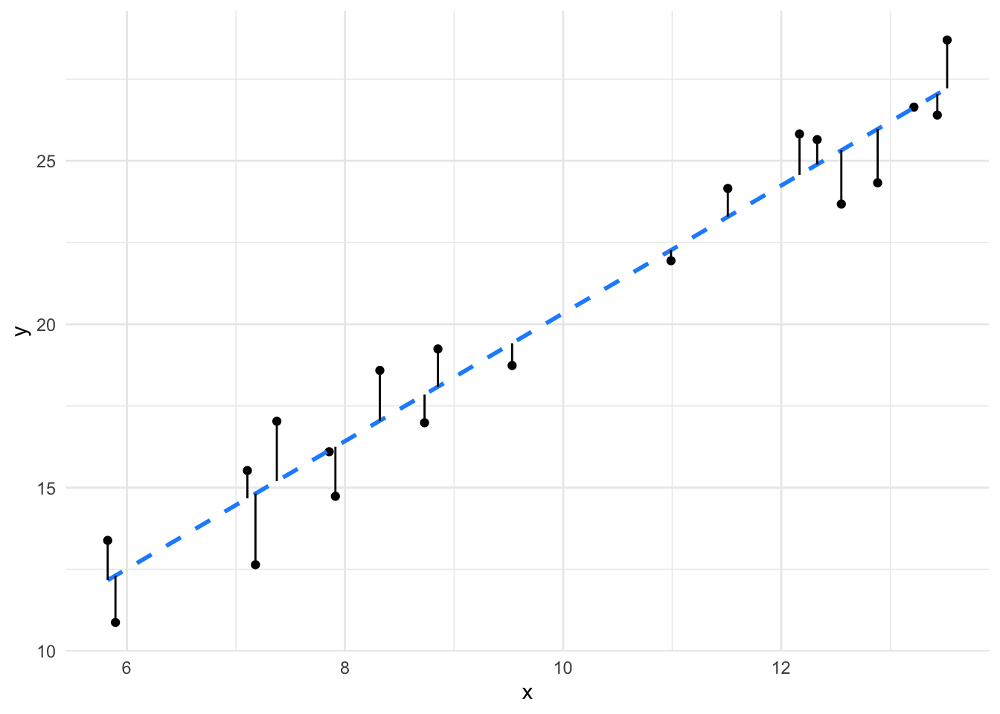
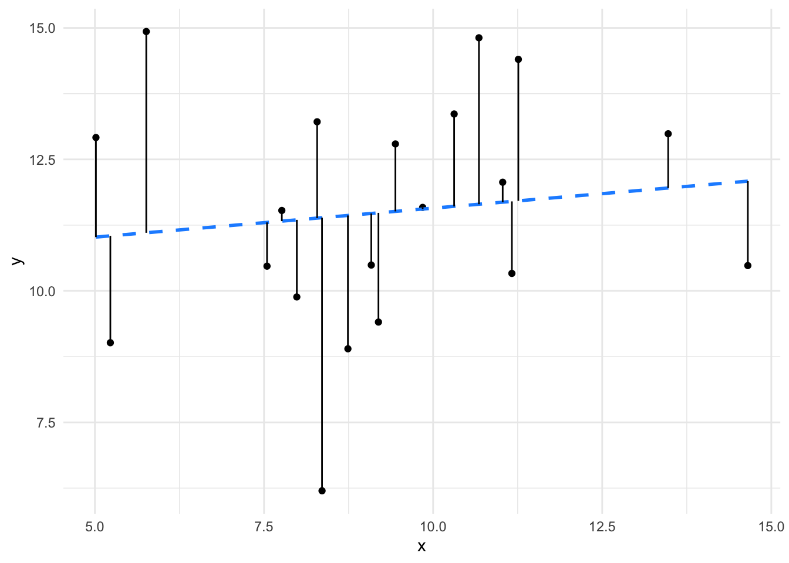

| Effect.Size | d |
|---|---|
| Very Small | 0.01 |
| Small | 0.20 |
| Medium | 0.50 |
| Large | 0.80 |
| Very Large | 1.20 |
| Huge | 2.00 |
1 Effect Size
- Questions
- How do we tell whether a difference between groups is big or small?
- Objectives
- Understand what an effect size is
- Understand how to compute effect sizes for different data
- Keypoints
- Effect sizes tell you whether a difference between groups is significantly big
The usual \(p\)-value based statistics are an attempt to determine whether a sample is significant in terms of how frequently one like it occurs. If it doesn’t occur often, it is significant. But that isn’t the only way to think about a sample being significant. We can also ask whether the difference is meaningfully large, this is what the effect size hopes to capture
Effect size is of the three central ideas in Estimation Statistics. In essence an effect size is just the ‘size of the effect’ or in other words the size of the difference between groups or the strength of a relationship. It is an essential component in assessing the strength of a relationship between variables and a critical tool in working out whether a statistical claim (like significance) is valid or not.
You will already be familiar with the most common effect sizes, these are common metrics like the sample mean difference, the regression coefficient (\(r\)) from a regression analysis or the likelihood of an event.
1.1 Difference in sample means
The most commonly seen effect size is the difference between sample means. Despite the apparent simplicity and to an extent - obviousness - of the difference in the means of two groups this parameter is a very useful tool in determining whether or not a claim of difference or significance is valid or not.
One advantage and disadvantage of using the difference in sample means is that to have a good intuition about the claim of significance we must have some prior experience about whether the observed effect size is a big or small one. Large effect sizes are more significant, all other things being equal, but the absolute effect size is highly dependent on the specifics of the domain we are working in. For example 10g weight difference between two groups of adult humans is not going to be seen as significant, however 10g in difference in groups of adult domestic mice is quite large.
If we’re going to be formal about it, then we can write the absolute effect size as follows: Where \(n_i\) is the sample size for group \(x_i\)
\[\frac{\sum{x_1}}{n_1} - \frac{\sum{x_2}}{n_2}\]
Which looks more complicated than it is. The formula just describes the mean of the second group subtracted from the mean of the first group. We can simplify each term thus
\[\bar{x_i} = \frac{\sum{x_i}}{n_i}\]
Such that the formula for effect size becomes
\[\bar{x_1} - \bar{x_2}\] And \(\bar{x}\) which is pronounce ‘x bar’ is a pretty standard name for a sample mean in the statistical literature.
1.1.1 Standardised Effect Sizes
It would be extremely difficult to say whether even a 100g difference in human weight is as of as great significance as 10g in mice. Given that the real world meaningfulness of the mean sample difference is dependent upon the context we often need a mechanism through which we can compare effect sizes. Standardised effect sizes can help with this, and they work by taking into account the pooled standard deviation of the two samples, expressing the mean difference in terms of the variation in the numbers that make up the mean. If \(s\) is the pooled standard deviation then our standardised effect size \(d\) is
\[d =\frac{\bar{x_1} - \bar{x_2}}{s}\] Computing this for our mouse and human data would enable us to make reasonable comparisons between the significance of the effect size in the different experiments.
The standardised effect size was introduced by Jacob Cohen and the number is known as Cohen’s \(d\). Cohen also suggested descriptions of the different values of \(d\) and the effect size:
So if we get a \(d\) of 0.7, we have a medium effect size.
Computing \(s\) in real life
Computing \(s\) is done according to a formula called the pooled standard deviation for two independent samples. If you don’t look at lots of formulae it looks a little scary at first glance so I haven’t included it here, I mention it just to point out that it isn’t the same as adding up the two individual sample standard deviations.
1.1.2 Calculating Mean Difference Effect Sizes in Practice
Thankfully there are functions in R that we can use to calculate each of the quantities we have mentioned straight from the data we collect, so we don’t need to know all the formulae off the top of our heads. We can use the effectsize library for this. First though, let’s generate some samples of data from a random normal distribution with mouse sized and human sized means (measuring their weight in grams), but a standard deviation that is the same proportion of the mean in each
Domestic mice are about 20 g in mass.
set.seed(123) # ensure random numbers are identical every time
library(effectsize)
x_mouse <- rnorm(10, mean = 20, sd = 20 / 3 )
y_mouse <- rnorm(10, mean = 10, sd = 10 / 3 )
cohens_d(x_mouse, y_mouse)Cohen's d | 95% CI
------------------------
1.91 | [0.82, 2.97]
- Estimated using pooled SD.So we get an effect size which is pretty large!
Now let’s try the human data, humans are about 65 kg in mass (depending on where you measure!)
x_human <- rnorm(10, mean = 65000, sd = 65000 / 3 )
y_human <- rnorm(10, mean = 32500, sd = 32500 / 3 )
cohens_d(x_human, y_human)Cohen's d | 95% CI
------------------------
1.34 | [0.34, 2.30]
- Estimated using pooled SD.The human effect size is of similar magnitude to that of the mouse, that is ‘large’, from intuition on both sets of measurements we can see that the halving of mass is a big effect, so it matches up. Let’s try the human measurements at a mouse size change
x_human <- rnorm(10, mean = 65000, sd = 65000 / 3 )
y_human <- rnorm(10, mean = 64990, sd = 64990 / 3 )
cohens_d(x_human, y_human)Cohen's d | 95% CI
-------------------------
-0.24 | [-1.11, 0.65]
- Estimated using pooled SD.As expected the effect size reduces to small.
1.2 Explained variation
Another common type of effect size is that computed for correlation style data (like that we see in linear regression models), so when we have a continuous \(x\) (explanatory variable) and a response . These effect sizes are based on the amount of the variance that is captured by the model (like a linear model). In other terms we’ve thought about explained variation as the fit to the model.
We can visualise this in a scatter plot. The greater the explained variation, the better the fit to the line.


It is clear to see that the line (and therefore model) fits the data in the left panel much better than the line (model) fits the data in the right panel. The effect size of the better fit model is going to be larger.
1.2.1 Pearson’s \(r\)
Pearson’s \(r\) value is one we are likely familiar with from correlation analysis and is a simple effect size we can use with \(x\) and \(y\) continuous data. It runs from -1 to 1 with values around 0 indicating a smaller effect size and values at -1 or 1 indicating larger effect sizes. The sign (+/-) of \(r\) indicates only the nature of the correlation, not the effect sizes, so -0.3 and + 0.3 are equivalently sized negative and positive correlations.
The value of this effect size is interpreted differently from that of Cohen’s \(d\), as the values can only run from -1 to 1, here’s a brief table of categories
| Effect.Size | r |
|---|---|
| Small | 0.1 |
| Medium | 0.3 |
| Large | 0.5 |
These values vary from domain to domain, in some domains we would expect a much stronger correlation and correspondingly larger values of \(r\) to give the same description of an effect size. Consider correlations between performances of machines like car engines, it’d be very surprising if they didn’t correlate in the very high 0.9s, whereas correlations of biological measurements would be good at a much lower level. The values given in the table above were stated by Cohen (again) for the Social Sciences. You’ll need to make conclusions judiciously and with an informed mind (and again in conjunction with other measures) for the domain you are working in.
As it is fundamental, calculating Pearson’s \(r\) is easy in R. Let’s use the data from the plots above to run through it. The left plot data is in a dataframe called df1, the right plot data is in a dataframe called df2. The function we need is cor(), which is part of base R.
cor(df1$x, df1$y)[1] 0.9716088Which gives a high correlation indeed. For the less well fitting data we see this
cor(df2$x, df2$y)[1] 0.1213444a much lower Pearson’s \(r\).
1.2.2 \(r^2\)
A related effect size is \(r^2\) which is literally \(r \times r\). It measures the proportion of variance shared between the two variables under examination, so can be interpreted as the amount of variance explained. This one naturally runs between values of 0 and 1 so loses the information about direction of correlation.
1.3 Using the effect size
At the beginning of this course we cautioned about using \(p\)-values as the sole measure to decide whether a claim about differences is significant or important. The same caution applies to the effect size, whether you use Cohen’s \(d\), Pearson’s \(r\) or some other measure. There’s no cut-off that always makes sense, so never use it on it’s own. Use your expertise and other measures we’ll see later (and including but not limited to hypothesis tests and \(p\)-values) to make data informed interpretations about your results and never rely on arbitrary cut-offs. At the end of this book we will examine the integration of the different estimate statistics covered.
1.4 The assumptions of effect sizes
As we’ve discovered before, statisticians make assumptions about data when discovering statistics. The standard assumption is that the data and the variance are Normally Distributed (so follow the Normal Distribution). The effect sizes we’be discussed here make that assumption in the calculations too. Practically, it means that the further you get away from a ‘Normal’ situation the less use the named effect size formula will be. There are other effect sizes for non-Normal data, notably the Spearman’s Rank \(r\) and Kendall’s \(\tau\) for ranked and categorical correlations. Sometimes the raw mean difference is the only practical measure of effect size.
Although it is important that you are aware whether your data are close to Normal or not, the problem isn’t always drastic and in combination with other measures we can reduce misuse of single statistics. In the next steps will look at ways of dealing with arbitrary distributions with Estimation Statistics.
Roundup
Effect Sizes are a good estimation statistic to use to give you an idea of whether an effect (change) is significant in terms of magnitude (rather than merely frequency of occurence). In conjunction with other statistics it can help fill out a story about your groups of data